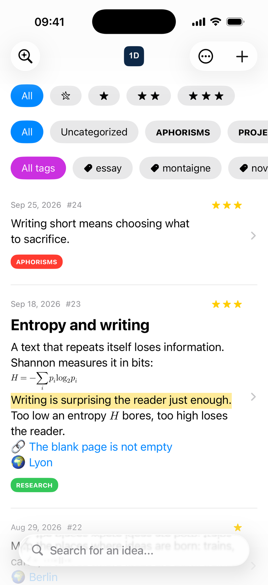
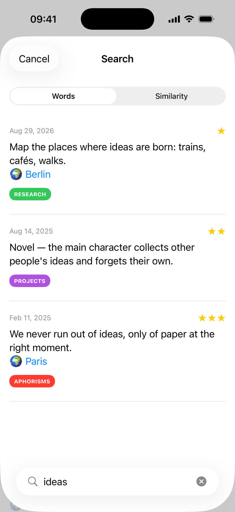
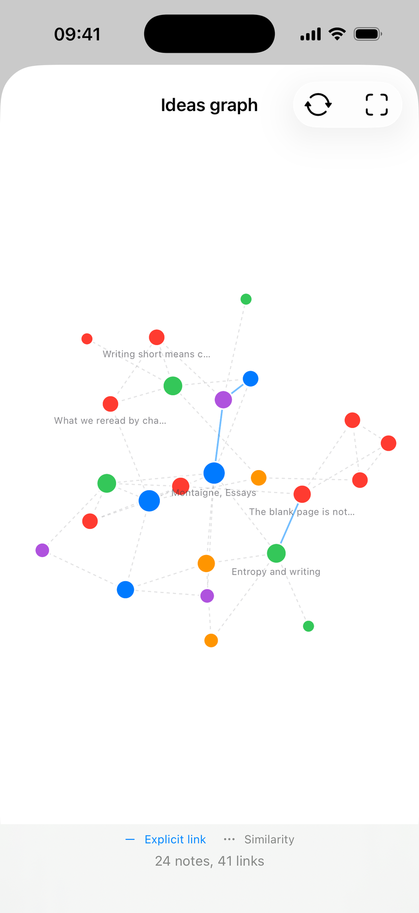
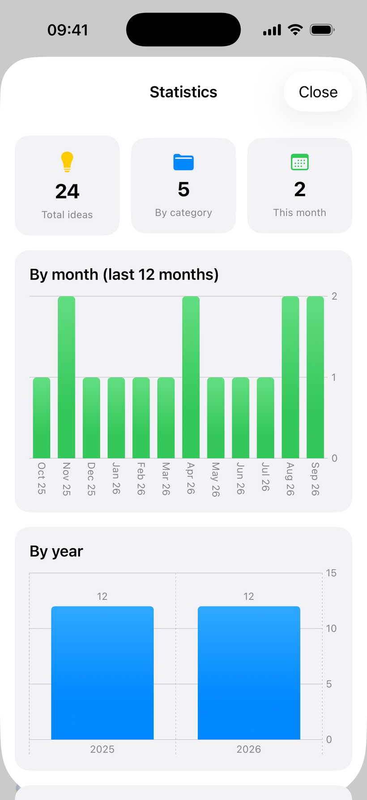
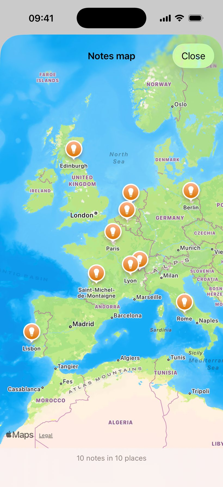

Une idée ne prévient jamais.
Ideas never make an appointment.
1dea la capture en une seconde, la range sans effort, et vous la rend au moment où vous l'aviez oubliée.
1dea catches them in a second, files them without effort, and hands them back just when you had forgotten them.
Gratuit, sans publicité, sans compte à créer.
Free, no ads, no account to create.
Chaque point est une note. 1dea rapproche celles qui se répondent, sans que vous ayez rien à classer.
Every dot is a note. 1dea draws together the ones that echo each other, with nothing for you to file.
La noter avant qu'elle ne s'échappe
Write it down before it gets away
Une idée arrive dans le métro, au milieu d'une lecture, pendant une conférence. Le temps de chercher où l'écrire, elle est partie.
An idea arrives on the train, in the middle of a book, during a talk. By the time you have found somewhere to write it, it is gone.
Trois gestes, aucun classement
Three ways in, no filing
Depuis l'app, depuis le bouton Partager de n'importe quelle application, ou en dictant à Siri. Vous écrivez, c'est tout : les catégories, les tags et les étoiles viennent après, si vous en voulez.
From the app, from the Share button of any other app, or by asking Siri. You write, that is all: categories, tags and stars come later, if you want them at all.
-
MarkdownMarkdown Titres, gras, italique, surlignage, listes, citations, code, liens. Headings, bold, italic, highlight, lists, quotes, code, links.
-
Équations LaTeXLaTeX equations Sur leur propre ligne, ou au milieu d'une phrase. On their own line, or in the middle of a sentence.
-
Le lieuThe place Où l'idée vous est venue, ajouté automatiquement si vous le demandez. Where the idea came to you, added automatically if you ask for it.
-
Siri et RaccourcisSiri and Shortcuts « Ajouter une idée », sans déverrouiller l'écran. "Add an idea", without unlocking the screen.

La retrouver sans se rappeler des mots
Find it again without remembering the words
On se souvient rarement de la phrase exacte. On se souvient de ce qu'elle disait.
You rarely remember the exact sentence. You remember what it was about.
Une recherche qui comprend
A search that understands
Cherchez « oubli » et 1dea vous rend la note qui parlait de mémoire et de carnets, sans partager un seul mot avec votre requête. Le calcul se fait sur votre appareil, hors ligne, sans rien envoyer nulle part.
Search for "forgetting" and 1dea hands you the note about memory and notebooks, without a single word in common with your query. The work happens on your device, offline, with nothing sent anywhere.
Et quand vous préférez le classement à la fouille : catégories colorées, tags, et une à trois étoiles, filtrables d'un geste.
And when you would rather sort than search: coloured categories, tags, and one to three stars, all filterable in a tap.

Voir la forme de sa propre pensée
See the shape of your own thinking
Le graphe pose toutes vos notes dans le même espace et les laisse trouver leur place. Les grappes qui se forment, vous ne les aviez pas décidées.
The graph drops every note into one space and lets them find their own places. The clusters that form are not ones you decided on.

Deux sortes de liens, jamais confondues
Two kinds of link, never confused
Une suggestion n'est pas une décision. 1dea les distingue à l'œil.
A suggestion is not a decision. 1dea keeps them apart on sight.
-
Le lien que vous avez posé The link you made yourself Vous avez relié ces deux notes à la main. Trait plein. You tied these two notes together by hand. Solid line.
-
La proximité de sens Closeness in meaning 1dea a trouvé ces deux notes voisines. Pointillé — c'est une proposition, à vous de trancher. 1dea found these two notes close. Dashed — it is a proposal, yours to accept or ignore.
-
La taille dit le nombre de liens Size means number of links Les notes autour desquelles votre pensée tourne se voient tout de suite. The notes your thinking keeps circling stand out at once.
-
La couleur dit la catégorie Colour means category La même que dans la liste, pour ne pas apprendre deux codes. The same one as in the list, so there is only one code to learn.
-
Touchez un point, lisez la note Tap a dot, read the note Elle s'ouvre sur place, avec ses voisins, et vous sautez de l'une à l'autre. It opens where it is, with its neighbours, and you hop from one to the next.
Ce qui entre, ce qui sort
What comes in, what goes out
Une note qu'on ne peut pas faire sortir est une note prisonnière. 1dea ouvre les deux portes, dans des formats que d'autres logiciels savent lire.
A note you cannot get out is a note held hostage. 1dea opens both doors, in formats other software can read.
-
Le bouton Partager
The Share button
Un passage sélectionné dans Safari, un texte venu d'une autre app.
A passage selected in Safari, a text from any other app.
-
Siri et Raccourcis
Siri and Shortcuts
« Ajouter une idée », ou votre propre automatisation.
"Add an idea", or an automation of your own.
-
Import JSON
JSON import
Fusionner avec vos notes existantes, ou tout remplacer.
Merge with what you already have, or replace the lot.
vos notes,
sur votre appareil
your notes,
on your device
-
Copier comme citation
Copy as a quote
Le texte seul, propre, avec votre signature si vous en avez mis une.
The text alone, clean, with your signature if you set one.
-
Partager vers n'importe où
Share anywhere
Messages, courriel, notes : la feuille de partage habituelle.
Messages, mail, notes: the usual share sheet.
-
Export JSON
JSON export
Toute votre base, lisible, à vous de la garder où vous voulez.
Your whole library, readable, yours to keep wherever you like.
-
Note de projet
Project note
Empilez plusieurs idées dans un brouillon de travail, puis sortez-le d'un bloc.
Stack several ideas into one working draft, then take the whole thing out.
Relire, et se regarder écrire
Reread, and watch yourself write
Un carnet qu'on ne rouvre jamais ne sert à rien. 1dea vous ramène vos idées de lui-même, et vous dit ce que vous êtes en train de devenir.
A notebook you never reopen is worth nothing. 1dea brings your ideas back by itself, and tells you what you are turning into.
Le widget qui vous relance
The widget that nudges you
Une idée au hasard sur l'écran d'accueil, parmi les catégories de votre choix, renouvelée toutes les quinze minutes ou une fois par jour. C'est souvent celle-là qu'on croyait perdue.
A random idea on your Home Screen, from the categories you pick, refreshed every fifteen minutes or once a day. It is usually the one you thought you had lost.
-
StatistiquesStatistics Par mois, par année, par catégorie, par étoiles. By month, by year, by category, by rating.
-
VocabulaireVocabulary Combien de mots vous avez écrits, et combien il vous en reste à écrire — estimateur Chao2. How many words you have written, and how many are still ahead of you — Chao2 estimator.
-
EntropieEntropy La diversité de votre vocabulaire, en bits, suivie dans le temps. How varied your vocabulary is, in bits, tracked over time.
-
Carte du mondeWorld map Où vos idées vous sont venues, toutes sur la même carte. Where your ideas came to you, all on one map.


Écrire court, c'est choisir ce qu'on sacrifie.
To write short is to choose what you give up.
Une note prise dans 1dea, un mardi, dans un train.
A note taken in 1dea, on a Tuesday, on a train.
Vos notes restent à vous
Your notes stay yours
Pas de compte à créer, pas de serveur à nous. La synchronisation passe par votre iCloud, entre iPhone, iPad et Mac à puce Apple. La recherche par le sens, le graphe et les statistiques sont calculés sur l'appareil. Verrouillage par Face ID, Touch ID ou code.
No account to create, no server of ours. Sync goes through your own iCloud, across iPhone, iPad and Apple silicon Mac. Search by meaning, the graph and the statistics are all computed on the device. Lock it with Face ID, Touch ID or a passcode.
Télécharger sur l'App Store Download on the App StoreGratuit, sans publicité, sans achat intégré. En français et en anglais.
Free, no ads, no in-app purchases. In English and French.